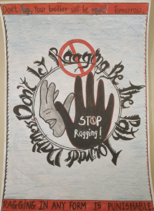

Ragging is a deep-rooted social menace that has plagued educational institutions for decades, causing mental, emotional, and sometimes physical harm to students. It is a practice that thrives on power imbalances, leaving many students feeling helpless and isolated. The Anti-Ragging Mission aims to eliminate this harmful culture, ensuring that every student can thrive in an environment of mutual respect, safety, and dignity.
Our mission is centered on the principle that education should empower individuals, not subject them to fear or harassment. We stand as a beacon of support for students, fostering a zero-tolerance approach toward ragging while promoting awareness and empathy. Through strict enforcement of anti-ragging policies and the cultivation of a supportive ecosystem, we aim to bring an end to this practice.
The Anti-Ragging Mission is more than just a set of rules—it is a community effort involving students, faculty, parents, and administrative authorities. Our platform provides victims with a safe space to report incidents without fear of retaliation. Complaints are handled transparently, with timely resolutions ensured by a dedicated disciplinary committee. Alongside this, we offer counseling services to help students recover from the trauma associated with ragging and awareness programs to educate the community about the severe consequences of such behavior.

Through the implementation of complaint management systems, disciplinary measures, and support frameworks, we are building campuses where students feel empowered to speak up and act against injustice. We believe that prevention is just as important as resolution, which is why we emphasize education, orientation sessions, and campaigns to foster a culture of mutual respect and harmony.

By working together, we can eradicate ragging and create institutions that stand as safe havens for learning, growth, and development. Join us in this mission to uphold the values of equality, dignity, and justice. Together, we can ensure that every student is free to pursue their aspirations in an environment free from fear. Let’s take a stand—because the future of education should be built on respect, not intimidation.
Guidelines:
- To ensure a safe, inclusive, and ragging-free environment, it is imperative that strict guidelines are established and maintained across educational institutions. These guidelines form the backbone of the Anti-Ragging Mission, providing a clear framework for prevention, resolution, and accountability.
- Zero Tolerance Policy: All institutions must adopt a zero-tolerance policy toward ragging. This includes strict enforcement of anti-ragging laws and regulations, with severe consequences for perpetrators.
- Awareness Programs: Regular workshops, seminars, and campaigns should be conducted to educate students and staff about the consequences of ragging and the importance of fostering respect and inclusion.
- Anti-Ragging Committees: Each institution should establish a dedicated anti-ragging committee comprising faculty, students, and administrative staff to monitor, prevent, and address incidents effectively.
- Confidential Complaint Mechanisms: Victims should have access to a safe and confidential platform to report ragging incidents without fear of retaliation. Online portals and helplines can ensure easy accessibility.
- Counseling Support: Both victims and perpetrators should have access to counseling services to recover from trauma and promote behavioral reform.
- Orientation for Freshers: Special sessions for new students should focus on creating awareness about ragging and informing them of their rights and resources available.
- By adhering to these guidelines, institutions can uphold the values of safety, respect, and equality, ensuring a ragging-free campus for all.